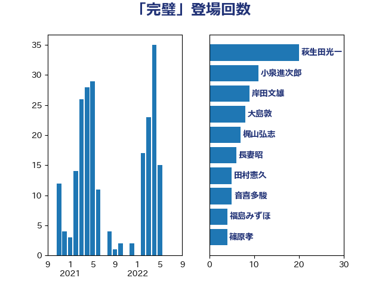

単語「完璧」

| 萩生田光一 | 自由民主党 | 20 回 |
| 小泉進次郎 | 自由民主党 | 11 回 |
| 岸田文雄 | 自由民主党 | 9 回 |
| 大島敦 | 立憲民主党 | 8 回 |
| 梶山弘志 | 自由民主党 | 7 回 |
| 長妻昭 | 立憲民主党 | 6 回 |
| 田村憲久 | 自由民主党 | 5 回 |
| 音喜多駿 | 日本維新の会 | 5 回 |
| 福島みずほ | 社会民主党 | 4 回 |
| 篠原孝 | 立憲民主党 | 4 回 |
| 近藤昭一 | 立憲民主党 | 4 回 |
| 山口壯 | 自由民主党 | 3 回 |
| 山崎誠 | 立憲民主党 | 3 回 |
| 逢坂誠二 | 立憲民主党 | 3 回 |
| 中島克仁 | 立憲民主党 | 2 回 |
| 堀内詔子 | 自由民主党 | 2 回 |
| 塩村あやか | 立憲民主党 | 2 回 |
| 小林鷹之 | 自由民主党 | 2 回 |
| 小沼巧 | 立憲民主党 | 2 回 |
| 山際大志郎 | 自由民主党 | 2 回 |
| 梅村聡 | 日本維新の会 | 2 回 |
| 森山浩行 | 立憲民主党 | 2 回 |
| 武田良太 | 自由民主党 | 2 回 |
| 玉木雄一郎 | 国民民主党 | 2 回 |
| 田嶋要 | 立憲民主党 | 2 回 |
| 盛山正仁 | 自由民主党 | 2 回 |
| 細田健一 | 自由民主党 | 2 回 |
| 茂木敏充 | 自由民主党 | 2 回 |
| 西村康稔 | 自由民主党 | 2 回 |
| 上川陽子 | 自由民主党 | 1 回 |
| 井上信治 | 自由民主党 | 1 回 |
| 佐藤啓 | 自由民主党 | 1 回 |
| 加藤勝信 | 自由民主党 | 1 回 |
| 吉川ゆうみ | 自由民主党 | 1 回 |
| 吉川沙織 | 立憲民主党 | 1 回 |
| 国定勇人 | 自由民主党 | 1 回 |
| 大石あきこ | れいわ新選組 | 1 回 |
| 宗清皇一 | 自由民主党 | 1 回 |
| 宮下一郎 | 自由民主党 | 1 回 |
| 宮崎政久 | 自由民主党 | 1 回 |
| 小熊慎司 | 立憲民主党 | 1 回 |
| 小西洋之 | 立憲民主党 | 1 回 |
| 山井和則 | 立憲民主党 | 1 回 |
| 岩田和親 | 自由民主党 | 1 回 |
| 岸信夫 | 自由民主党 | 1 回 |
| 川崎ひでと | 自由民主党 | 1 回 |
| 平林晃 | 公明党 | 1 回 |
| 末松義規 | 立憲民主党 | 1 回 |
| 末次精一 | 立憲民主党 | 1 回 |
| 松野博一 | 自由民主党 | 1 回 |
| 枝野幸男 | 立憲民主党 | 1 回 |
| 江島潔 | 自由民主党 | 1 回 |
| 滝波宏文 | 自由民主党 | 1 回 |
| 石井苗子 | 日本維新の会 | 1 回 |
| 石田昌宏 | 自由民主党 | 1 回 |
| 神谷裕 | 立憲民主党 | 1 回 |
| 秋本真利 | 自由民主党 | 1 回 |
| 菅義偉 | 自由民主党 | 1 回 |
| 藤井比早之 | 自由民主党 | 1 回 |
| 西田昭二 | 自由民主党 | 1 回 |
| 赤羽一嘉 | 公明党 | 1 回 |
| 足立康史 | 日本維新の会 | 1 回 |
| 鈴木敦 | 国民民主党 | 1 回 |
| 高木かおり | 日本維新の会 | 1 回 |
| 高木啓 | 自由民主党 | 1 回 |
| 麻生太郎 | 自由民主党 | 1 回 |